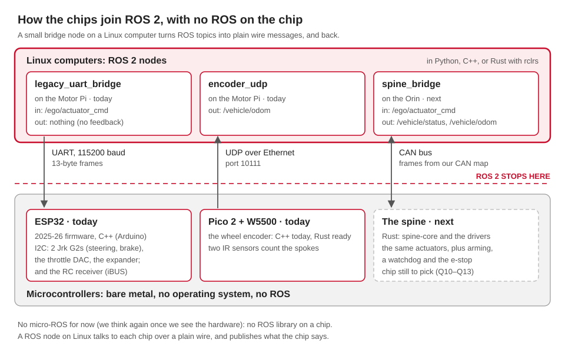

ROS stops at the CAN bus. Below it, a microcontroller called the spine owns the pins, the actuators and the watchdog. This page covers what goes where, the CAN contract, and what's left to build.
src/ vs firmware/
src/ |
firmware/ |
|
|---|---|---|
| Runs on | Linux computers: the Orin, the Pis, laptops | microcontrollers: ESP32, Pico 2 |
| ROS? | yes | no |
| Hardware code | only for devices that plug into Linux by USB or serial: the IMU, GPS, radar | pins, I2C actuator drivers, the RC receiver, the e-stop, timing loops |
| Reaches ROS | directly | through a bridge node: CAN to aav_spine, or today UART to aav_legacy |
ROS never sees a pin or an I2C address, only device names like can0 and /dev/aav/imu.
How a chip joins ROS 2
The chips never run ROS. A small bridge node on a Linux computer turns ROS topics into plain wire messages, and back.

| Way to join ROS 2 | On the chip | Our pick |
|---|---|---|
| A bridge node on Linux | plain firmware that speaks CAN, UART or UDP | ✅ today's ESP32 and Pico 2, and the spine next |
| micro-ROS | a ROS library in C, usually on a small operating system like FreeRTOS, plus an "agent" program on a Linux computer | not for now (Ben, 10 Oct): it's a bridge either way, and it isn't Rust. We think again once we see the hardware (Ben, 11 Oct) |
| rclrs (ROS in Rust) on the chip | not possible: rclrs needs a full operating system, like Linux | rclrs fits the Linux side, if a bridge is ever written in Rust |
One interface, many drivers
In ROS the interface is the message type, the topic and the frame. Any driver that publishes the same thing drops in, and nothing downstream changes.
| Interface | Implementations |
|---|---|
IMU: sensor_msgs/Imu on /sensors/imu/data_raw, frame imu_link |
yahboom_imu_cpp, gazebo_adapter |
GPS: sensor_msgs/NavSatFix on /sensors/gps/fix, frame gps_link |
ublox_gps, nmea_navsat_driver, ublox_dgnss, gazebo_adapter |
Backend: /ego/actuator_cmd in, /vehicle/odom out |
spine_bridge, legacy_uart_bridge, turtlesim_adapter, gazebo_adapter, carla_adapter |
The firmware applies the same idea one level down. spine-core never touches hardware:
the board code fills an Inputs struct, calls Spine::step, and writes out the
Outputs. The logic is tested on a laptop, and changing a motor driver only changes board
code.
The spine's job
- Take drive commands over CAN, and refuse them unless armed.
- Run the speed loop, and steer to the target angle.
- Read the wheel encoder. Report speed, steering, mode and faults.
- Let the RC override switch and the hardware e-stop beat the computer.
- The red button always stops the car, whatever our software does (Ben). We don't rewire it. The spine only listens, through a spare contact on the button, and tells ROS and the HUD it's pressed. If the spine crashes or loses power, the button still stops the car:
e-stop button ─────────────────► stops the car on its own (wired as it is today)
│
└─ a spare contact ──► spine (only listens) ──► ROS and the HUD: "e-stop pressed"- Stop by itself when commands stop: a 200 ms watchdog.
Who wins, highest first:
| # | Source | When |
|---|---|---|
| 1 | Any e-stop: the hardware button, or the ESTOP_CMD frame |
always: throttle off, full brake |
| 1 | A driver fault: steering, brake, throttle or encoder | the same |
| 2 | The RC transmitter | while its override switch is on |
| 3 | The computer | while armed and sending fresh DRIVE_CMD frames |
| 4 | Nobody | the actuators idle |
The computer must arm (/spine/arm) before it drives: at power-up, and after an e-stop,
a timeout or a driver fault. Arming sends armed = 0, then armed = 1. A glitch or a
reboot never restarts the car by itself.
The CAN contract
firmware/can/aav.dbc is the source of truth: classic CAN at 500 kbit/s, 11-bit IDs,
little-endian. Every frame ends with a CRC-8 and a 4-bit counter, and a bad one is
rejected.
| ID | Frame | Direction | Rate | Carries |
|---|---|---|---|---|
| 0x010 | ESTOP_CMD |
Orin → spine | 10 Hz, and at once on change | the e-stop request |
| 0x100 | DRIVE_CMD |
Orin → spine | 50 Hz | target speed, steering angle, limits, armed |
| 0x180 | VEHICLE_FEEDBACK |
spine → Orin | 50 Hz | measured speed and steering, wheel ticks |
| 0x181 | VEHICLE_STATUS |
spine → Orin | 10 Hz | mode, armed, e-stop, throttle %, brake %, faults |
Both sides test against the same generated frames. To change a frame:
- Edit the DBC.
- Edit both codecs:
can_codec.pyandprotocol.rs. - Run
python3 firmware/can/gen_test_vectors.py, thentools/test.sh.
firmware/spine: the Rust code
crates/spine-core is plain no_std Rust: no allocator, no dependencies, no hardware.
cargo test runs its 64 tests on any laptop.
| Module | Does |
|---|---|
spine.rs |
the priorities above: Spine::step(&Inputs) -> Outputs, about 100 times a second. Its SpineConfig holds the limits: 3.0 m/s, ±0.5 rad, 0.6 rad/s; 1.5 m/s² up, 2.5 m/s² down |
protocol.rs |
encodes and decodes the four frames, with the CRC and counter checks |
watchdog.rs |
the 200 ms command watchdog |
speed_loop.rs |
PI speed control into throttle and brake, never both at once. A stop brakes until the car is still, then holds |
limits.rs |
the helpers that apply them: slew() and abs() |
encoder.rs |
quadrature decoding, and speed from the time between counts |
Clean inputs for every board (debounced switches, an e-stop that trips at once, counting
with a lockout) are in a second crate, aav-inputs. The drivers for the spine's devices,
and the glue between them and spine-core, are written too (10 October):
| Crate | Drives | Tests |
|---|---|---|
jrk-g2 |
the two Pololu Jrk G2s (steering, brake) over I2C | 14 |
ad5311 |
the throttle DAC over I2C | 10 |
pca9555 |
the I/O expander: the direction output | 6 |
ibus |
the FlySky RC receiver | 24 |
mcp2515 |
the MCP2515 CAN controller over SPI: a Pico 2 has no CAN of its own | 34 |
legacy-link |
the Motor-Pi's 13-byte UART frames, and the targets the C++ set for them (15 Oct) | 31 |
spine-board |
all of them, from spine-core's outputs, in a safe order; their errors become fault bits. Commands through CAN or the UART (CommandLink) |
61 |
On a laptop, Bench mode runs spine-core on the CAN frames from spine_bridge,
driving a model car. The plan for all the firmware in Rust is
Rust on the hardware.
The board program for a Pico 2 is boards/pico2 (11 October): Embassy, CAN through an
MCP2515, a 100 ms hardware watchdog, and the e-stop's spare contact on GP15. It builds
(60 KB of flash, 2.8 KB of RAM) and its UF2 file checks out, but it has never run on a
board: untested. The car's chip is still Q10-Q13. Flashing it:
Rust on the hardware.
Buy a 3.3 V CAN module
The common MCP2515 module, with a TJA1050, runs at 5 V and doesn't suit a Pico 2's 3.3 V pins. Buy a 3.3 V one, for example an MCP2515 with an SN65HVD230.
Hardware facts from today's car:
| Part | Interface | Today's setting |
|---|---|---|
| Steering: Pololu Jrk G2 | I2C 0x05 | targets about 0–3500; the calibrations disagree (Q2) |
| Brake: Pololu Jrk G2 | I2C 0x04 | targets 400–3500 |
| Throttle: 10-bit DAC | I2C 0x0C | capped at 700 of 1023 |
| Direction | PCA9555 expander, I2C 0x20 | |
| I2C bus | SDA GPIO 21, SCL GPIO 22 | |
| RC receiver: FlySky FS-iA6B | iBUS on GPIO 32, 115200 baud | channel 5 override, 2 throttle, 3 steering, 4 mode. Counted from 0: on the transmitter they're CH6, CH3, CH4, CH5 (Q7) |
Today's firmware: firmware/legacy/
Copied unchanged from the 2025-26 team, as the fallback until the spine exists.
The ESP32's Rust replacement (15 Oct)
`firmware/spine/boards/esp32-umod` is `aav_umod_esp32` in Rust: the same board, pins
and devices, and byte for byte the same UART frames (checked against the C++ itself).
It builds, and has never been flashed. The C++ stays here, and on the car, until the
Rust one is proven on the car: [Rust firmware](rust-firmware.md),
[First flash on the bench](esp32-bench.md).
| Folder | What | Talks to ROS through |
|---|---|---|
aav_umod_esp32/ |
the ESP32 actuator firmware | UART from the Motor Pi, 13-byte frames: legacy_uart_bridge |
wheel_encoder_pico2/ |
the Pico 2 wheel encoder | UDP port 10111: encoder_udp |
aav_sentinel_pico2/ |
a Pico 2 status display | not wired in |
Build today's ESP32 firmware with pixi run -e firmware legacy-esp32 (PlatformIO), and
add -t upload to flash it. PlatformIO's downloads, about 1.5 GB, go into
vendor/platformio/. Without src/secrets.h, the build uses the example's placeholder
WiFi details: fine for a test build, but that board can't join the car's WiFi.
Before driving on the legacy path
- No command timeout. If frames stop, the last throttle stays on.
- The OTA update page has no password. Anyone on the WiFi can flash the car.
- No feedback. No speed, steering or faults come back.
- The steering sign is unconfirmed. Check it with the wheels off the ground.
- The WiFi password was public in the 2025-26 repositories. Change it.
Found in the 2025-26 ESP32 firmware, while porting its drivers
- Steering past full right turns full left. Stick values from 2001 to 2199 pass its
check, then wrap round to full lock the other way (
rc_handler.cpp). - No RC timeout. If the receiver goes quiet, the last throttle stays on.
- A Jrk G2 missing at boot is skipped for good, but the car still drives: throttle, with no brake.
- Throttle and brake at the same time, in the RC brake position.
- The direction can flip with the throttle on.
- Stale commands. Frames from ROS pile up during RC mode, and run when it ends.
- Latched Jrk errors never stay latched: reading them after every target clears them.
- Weak iBUS sync: frames get lost or misaligned.
- All 16 expander pins are driven high, whatever is wired to them.
- Two throttle scales: the top third of the RC stick does nothing.
The Rust drivers fix each of these. Until the spine replaces this firmware, drive today's car with the RC transmitter's switch in reach.
Still to decide
For the team, from the drivers' port. Each is one constant at the top of spine-core's
spine.rs, so the board program and the bench both follow a change:
| Constant | Today | The 2025-26 firmware |
|---|---|---|
ESTOP_STEERING |
Hold: the steering stays where it is on any stop |
centred it |
IDLE_BRAKE |
0.0: the brake lets go once the e-stop clears |
kept it full on (1.0) |
RC_GEAR_BRAKE |
SpeedZero: the speed loop brakes to a stop and holds |
put the brake full on at once |
⚠️ IDLE_BRAKE matters most: on a slope, a car with its brake off can roll.
And the design doc's questions Q10–Q17:
- who owns the spine, and which microcontroller;
- the CAN transceiver and wiring;
- where the encoder and the e-stop connect;
- steering feedback;
- what the actuators do when nobody is driving.